Blog
Stories, Reflections & Updates
Thoughts on disability, resilience, joy, and the everyday moments that shape how we show up in the world.
February 2, 2026
Achievement Unlocked: I'm a Certified Professional Speaker!
Whenever people ask how I started my journey as a speaker, I tell them it was all because of Speaker Slam. And now, I've earned their Professional Speaker Certification!
January 27, 2026
Remote Work Is Accessibility — Especially in Winter
Living with a muscle/mobility disability, my nervousness goes way up when it's winter and I'm out by myself. Remote work options aren't a "nice to have" — they're the difference in whether someone with a disability can accept a job or not.
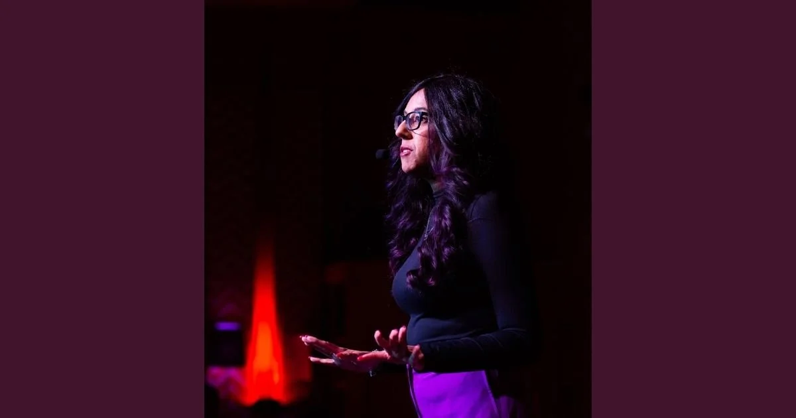
January 19, 2026
A Reminder of the Daily Yay on Blue Monday
We can feel that things may be difficult, while still finding the moments of joy to keep us going. Not despite our struggles, but through them. Today is Blue Monday — so it seemed like a good day for this reminder.
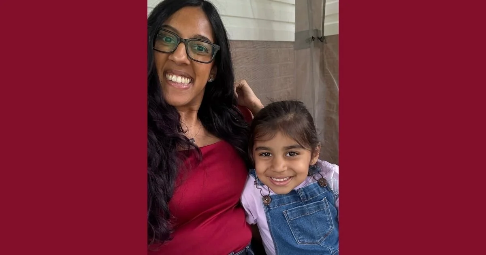
January 13, 2026
My Boyfriend's Niece Doesn't Know I Have a Muscle Disability, But…
Sometimes I'm self-conscious about things I can't do with her that other adults around her can. I've never explained my disability to her, but sometimes I wonder if she suspects I'm different...and doesn't care.
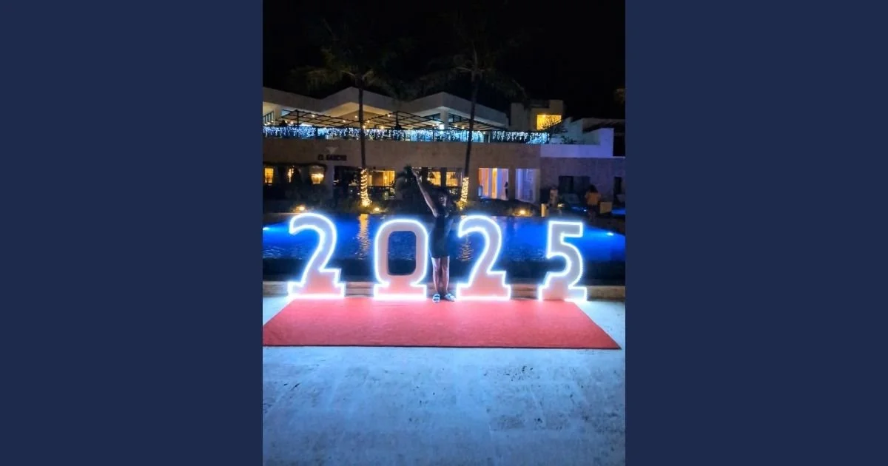
December 31, 2025
2025: A Year of Yays
Over 3,000 people saw my talks either virtually or in-person, and I was able to travel to six countries. From being interviewed by 3 mainstream media outlets, to becoming a School Program Ambassador for the Rick Hansen Foundation, it's been an amazing year.
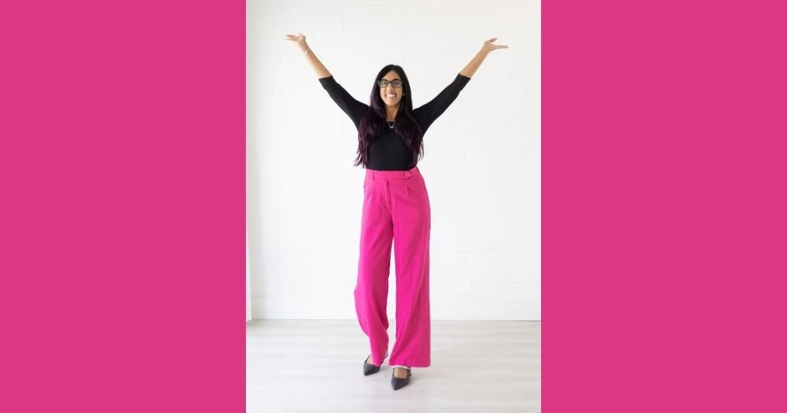
December 12, 2025
Speaking Event Recap: McKesson Canada
I did my virtual keynote "Bias, Belief and Belonging" for over 130 employees at McKesson Canada and their international Ability ERG members, as part of their recognition for International Day of Persons with Disabilities.
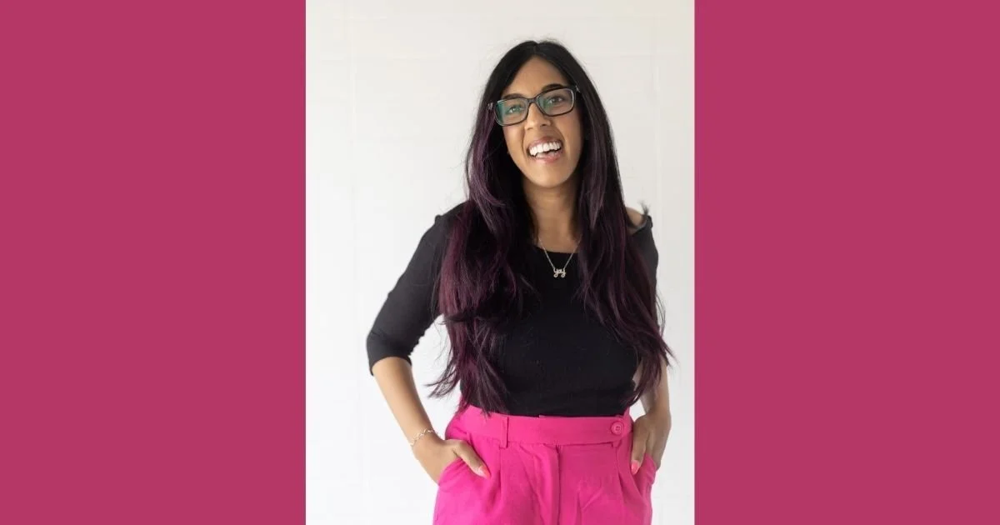
December 10, 2025
Speaking Event Recap: Health Canada
I presented my virtual keynote "Beyond What You See" for over 150 employees at Health Canada. The first comment really stuck out to me — that my take on living with an invisible disability made them feel heard.
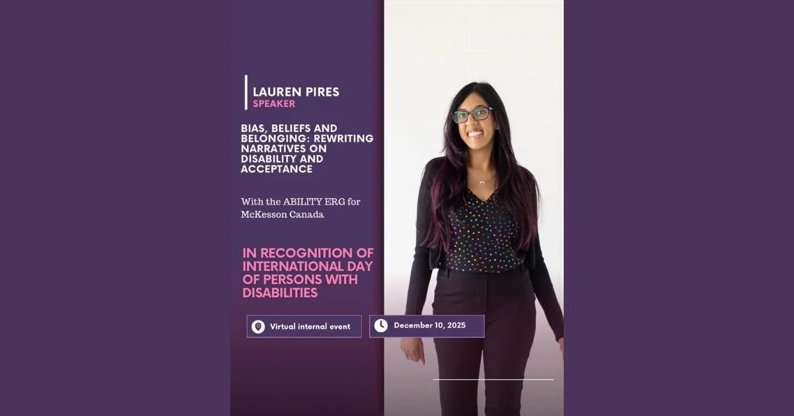
December 5, 2025
Speaking Event for International Day of Persons with Disabilities: McKesson Canada
Next Wednesday, I'll be speaking virtually to 200 employees at McKesson Canada about disability biases and beliefs, supporting invisible disabilities and fostering an empathetic, inclusive culture.
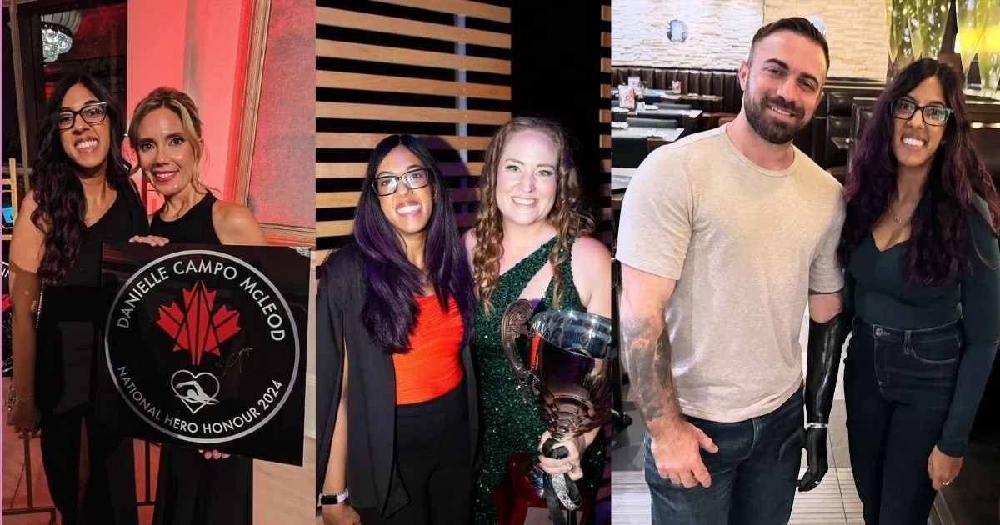
December 3, 2025
Representation on International Day of Persons with Disabilities
In 2023, I became Speaker Slam's #2 Inspirational Speaker of the Year. But today, on International Day of Persons with Disabilities, this post is about more than just me — it's about the disability community.
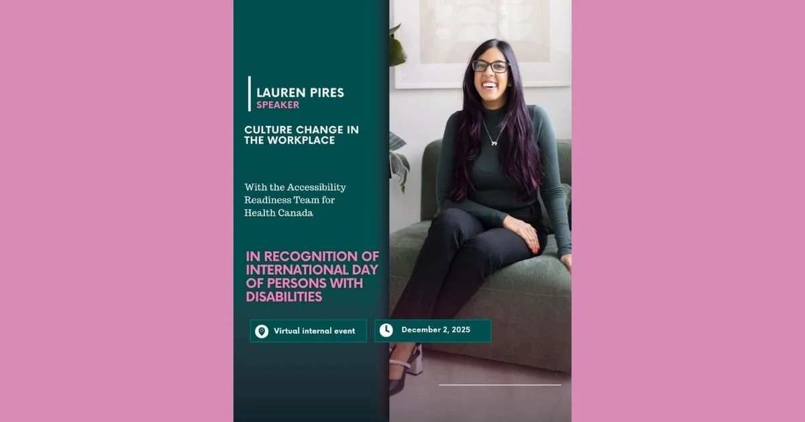
December 2, 2025
Speaking to Health Canada for International Day of Persons with Disabilities!
Next Tuesday, I'll be speaking virtually to 150+ employees across Health Canada about supporting invisible disabilities in the workplace.
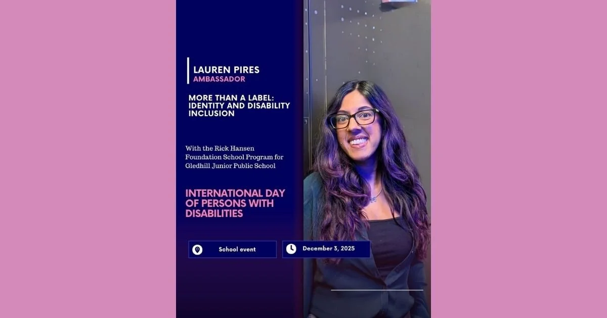
December 1, 2025
Speaking Event: Rick Hansen Foundation School Program in East York
This Wednesday, I'll be speaking to over 400 kindergarten to grade 5 students at Gledhill Junior Public School with the Rick Hansen Foundation School Program.
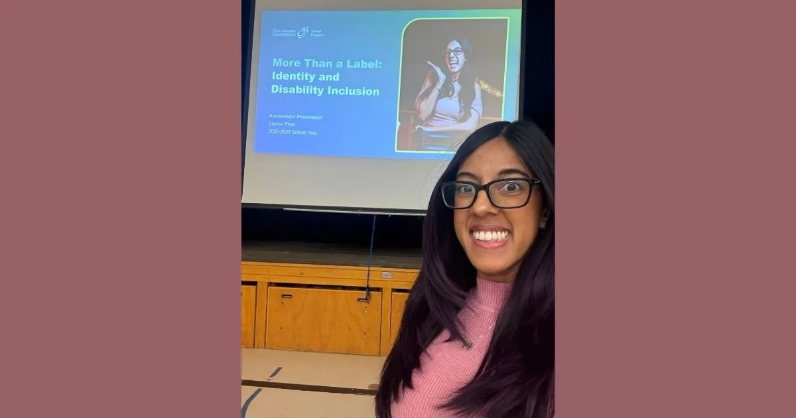
November 25, 2025
Speaking Event: Rick Hansen Foundation School Program in Scarborough Recap
A grade 1 or 2 girl said, in response to my question about one thing they learned that day, "I learned I'm not the only one with a disability." HEART. WARMED.
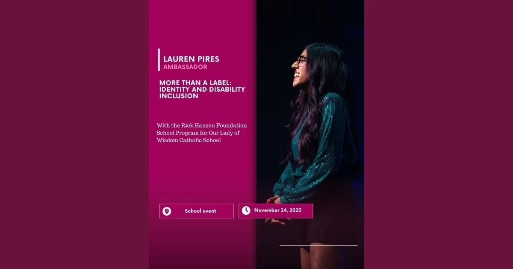
November 24, 2025
Speaking Event: Rick Hansen Foundation School Program in Scarborough
Excited to speak to over 300 students at Our Lady of Wisdom Catholic School about disability inclusion, as part of the Rick Hansen Foundation School Program.
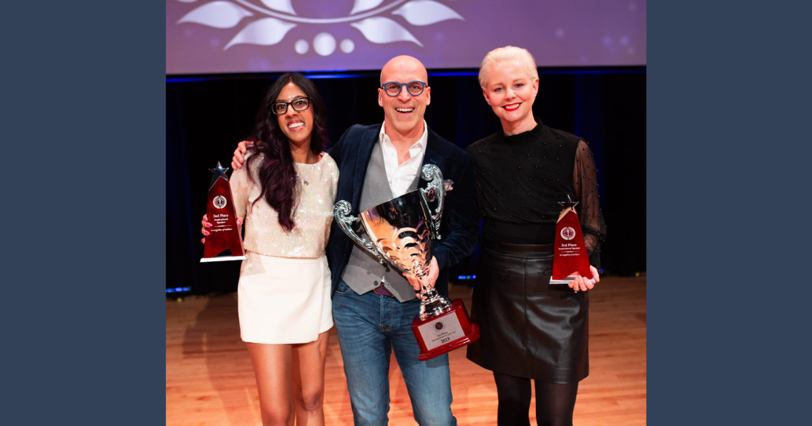
November 18, 2025
Two Years Later — Tips from a Speaker Slam Grand Slam Alum
Two years ago today, I became the #2 Inspirational Speaker of the Year at the Speaker Slam Grand Slam. Here are my two rehearsal tips for competitors.
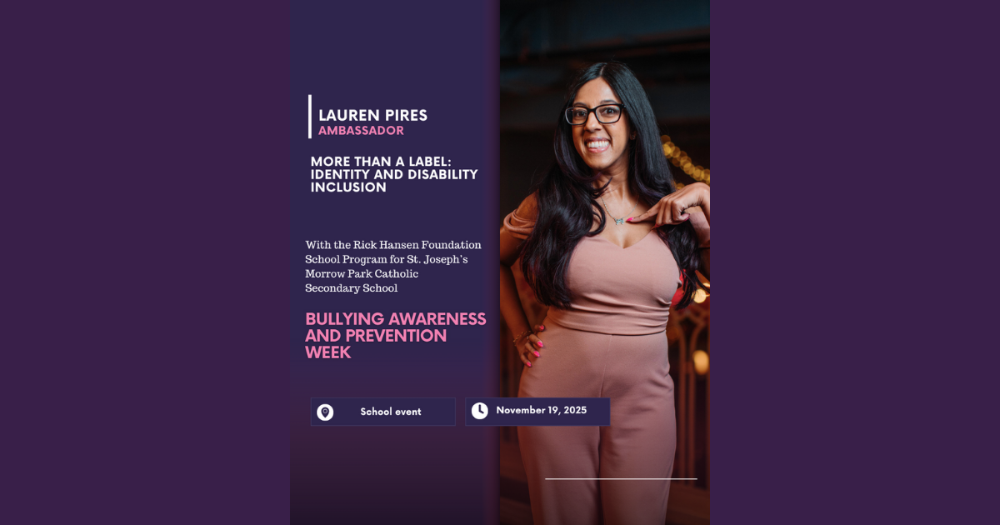
November 16, 2025
Speaking Event: Bullying Awareness and Prevention Week with the Rick Hansen Foundation School Program
Speaking to 500 high school students in North York about disability inclusion, language, and identity for Bullying Awareness and Prevention Week.
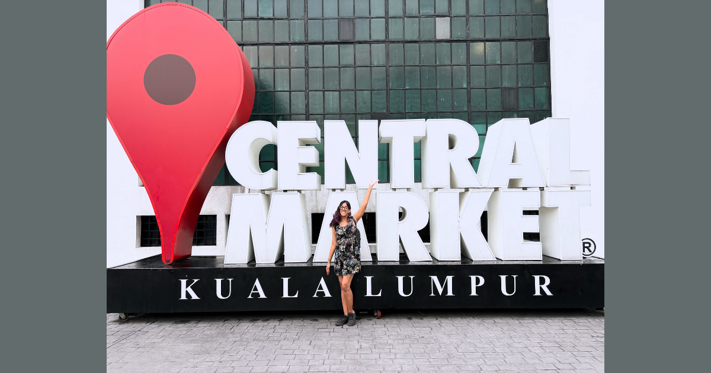
November 11, 2025
A Moment of Inclusion in Kuala Lumpur
When I got the ride confirmation, I noticed it said our driver was deaf. Mid-ride, I quickly Googled how to say "thank you" in sign language. Sometimes, a moment of inclusion is just a quick Google search away.
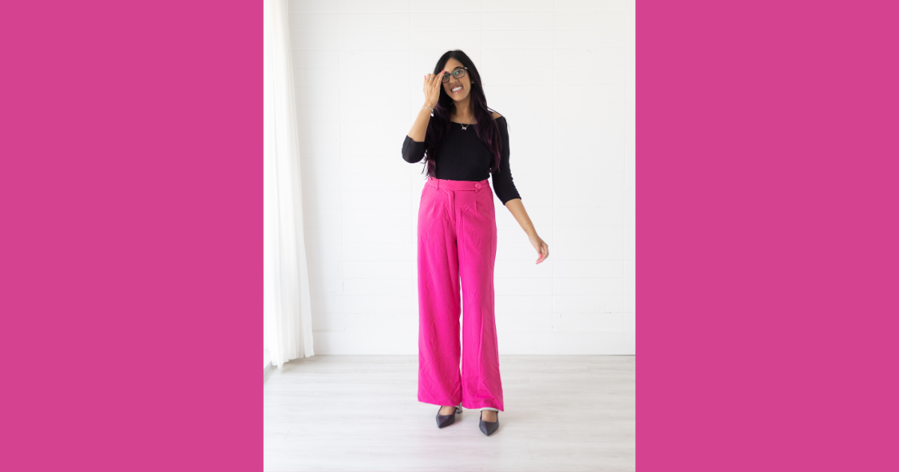
October 24, 2025
Day 6 of Invisible Disabilities Week: Recap of My Virtual Keynote for The Co-operators
"This session is my YAY" — feedback from my Invisible Disabilities Week talk for nearly 200 Co-operators employees across Canada.
October 23, 2025
Day 5 of Invisible Disabilities Week: Meeting Someone with My Disability for the First Time!
If you've ever felt nobody understands what you're going through, this is your sign we're never as alone as we think we are. Then, I connected with Carrie.
October 22, 2025
Day 4 of Invisible Disabilities Week: National Scar Appreciation Day!
I talked about hiding my leg scar for 25+ years. Growing up, I didn't wear shorts in public until my late twenties. Now I accept it more than I used to, and don't hide it anymore.
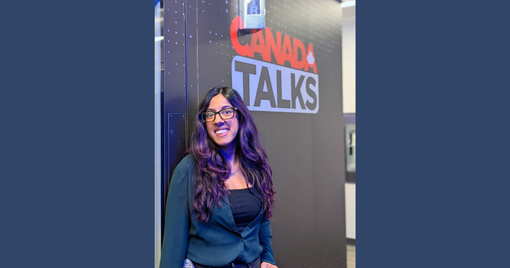
October 21, 2025
Day 3 of Invisible Disabilities Week: SiriusXM Canada Interview and Brunch Thoughts
I was asked what advice I'd give to someone with an invisible disability who wants to talk about it. True power is admitting the truth of who you are.
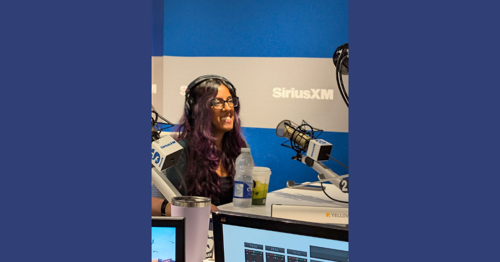
October 20, 2025
Day 2 of Invisible Disabilities Week: SiriusXM Canada Interview on The Boost!
Started my morning at Sirius XM Canada today for The Boost morning show, talking about my disability acceptance journey and Invisible Disabilities Week!
October 19, 2025
Day 1 of Invisible Disabilities Week: Time for a Re-introduction!
Hi! I'm Lauren — invisible disability speaker, accessibility advocate & frequent yay-sayer. I was born with Central Core Disease, a rare muscle disorder. Here's my full story.
October 16, 2025
One Invisible Disabilities Week Keynote Down, One to Go!
"I live with a lot of invisible disabilities, and your presentation spoke loudly to me, so thank you." Was so thrilled to speak to over 230 ESDC employees with 100% positive feedback!
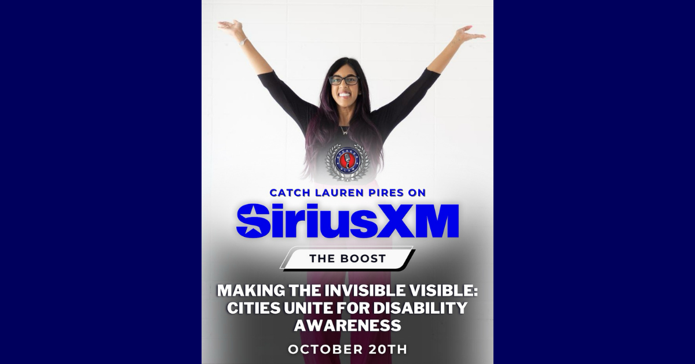
October 15, 2025
Catch Me on SiriusXM Canada's The Boost to Kick Off Invisible Disabilities Week!
An estimated up to 80% of disabilities are non-apparent. It took me a long time to realize that my disability isn't the problem — ableism is.
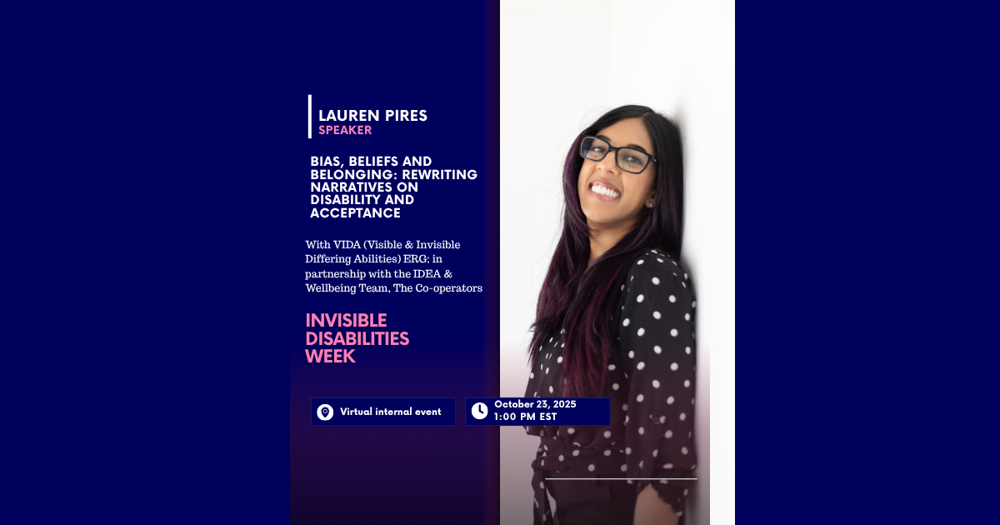
October 14, 2025
Invisible Disabilities Week Speaking Engagement for The Co-operators
Speaking virtually to 200-300 employees at The Co-operators about disability biases and beliefs, supporting invisible disabilities and fostering an empathetic, inclusive culture.
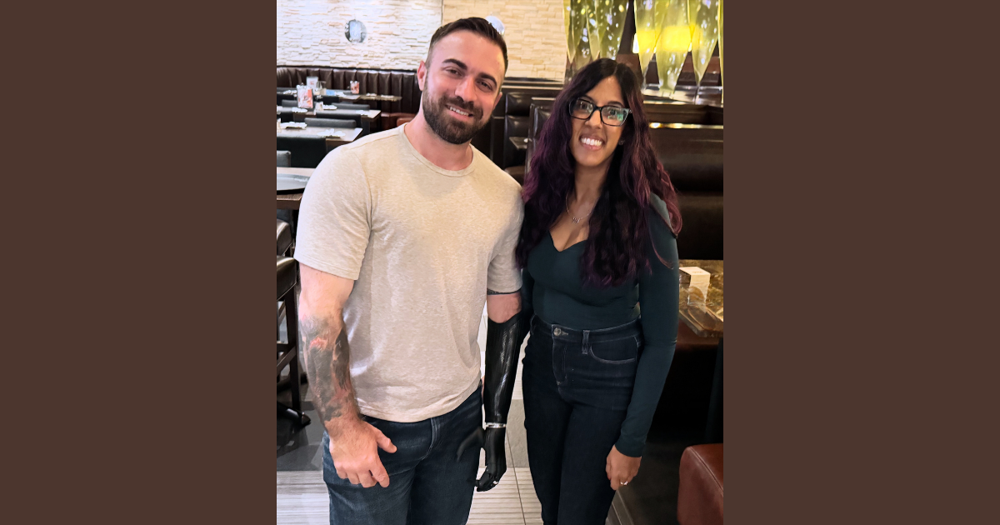
October 7, 2025
Two Disability Inclusion Speakers Walk into a Restaurant: Reflections with Chris Ruden
He understood a part of me, in a way I hadn't realized I'd never felt understood before. It's through sharing our stories that we finally find our people.
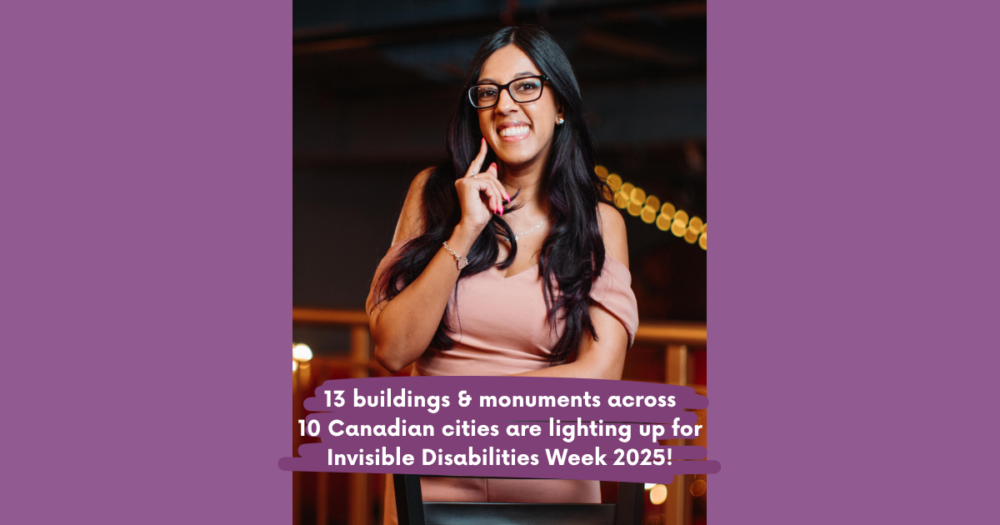
October 5, 2025
13 Canadian Buildings and Monuments Lighting Up for Invisible Disabilities Week
I've gotten 13 buildings and monuments across ten Canadian cities to light up for invisible disabilities — from Toronto Pearson Airport to the Hamilton sign.
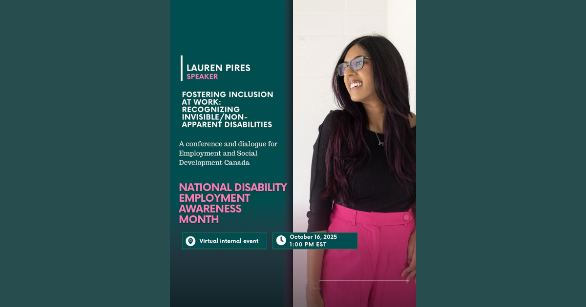
October 2, 2025
National Disability Employment Awareness Month (NDEAM) Speaking Event for ESDC!
Speaking virtually to 500-1,000 employees at Employment and Social Development Canada about supporting invisible disabilities in the workplace.
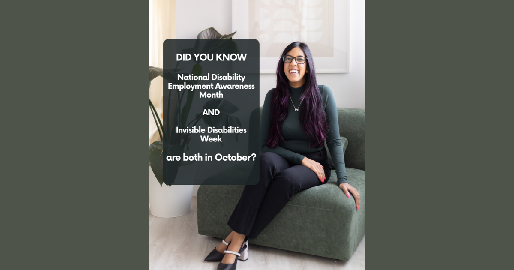
October 1, 2025
October Is National Disability Employment Awareness Month — Here's Why Remote Work Is a Yay
The main reason I accepted my first job? It was mostly remote work. Remote work isn't just a perk — it can keep a dedicated employee around for 11+ years.
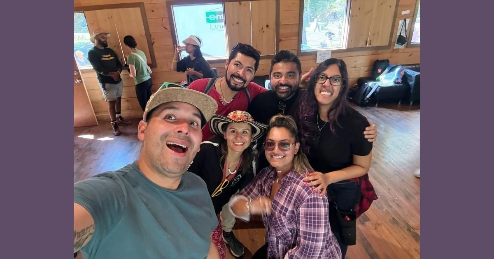
September 23, 2025
It's Not Difficult for Everyone — And That's the Point
I'd thought because the cabin was far and difficult for me, that meant it was difficult for everyone. But it's not as difficult for everyone — and that's the point.
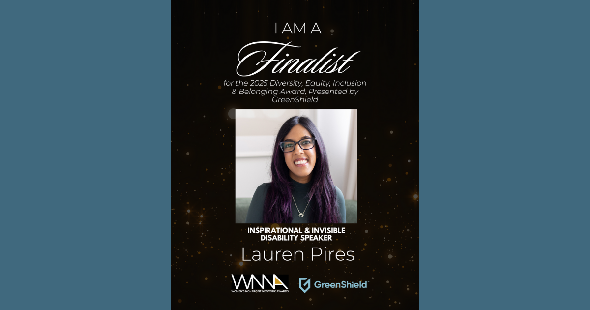
September 9, 2025
I'm a Finalist for the 2025 DEIB Award by the Women's Nonprofit Network!
An absolute joy to be named a finalist for the Diversity, Equity, Inclusion & Belonging award by the Women's Nonprofit Network, presented by GreenShield!
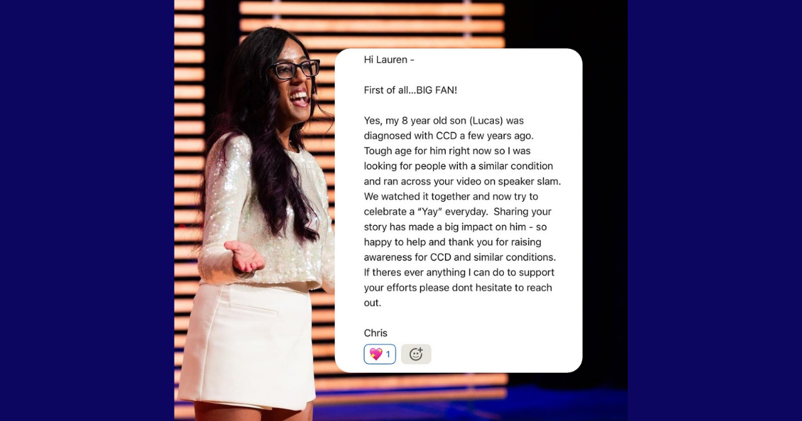
July 29, 2025
Chris, Lucas and the Daily Yay
A father found my Speaker Slam speech and now his 8-year-old son Lucas, who also has Central Core Disease, practices the Daily Yay every day. We never know who we're impacting.
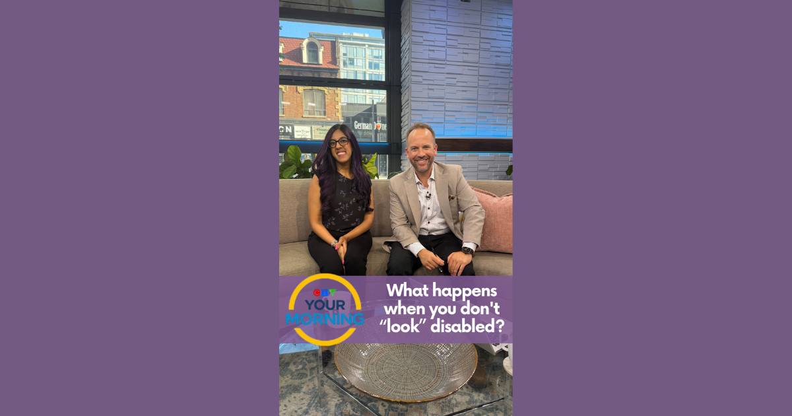
July 29, 2025
What Happens When You Don't "Look" Disabled? CTV Your Morning Interview
Such a joy to chat on CTV Your Morning about the fear of sharing invisible disabilities and the community I found when I started talking about my own.
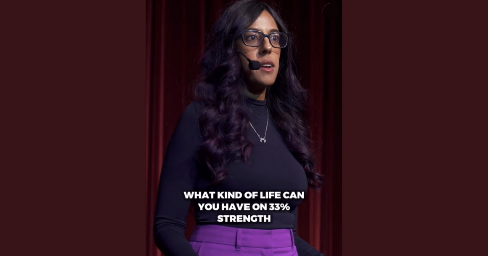
July 28, 2025
For a Long Time, I Didn't Even Know How to Talk About It
I learned I have about 33% strength of the average person. Not 33% LESS strength, just straight up, 33% strength. A wildly failing grade, finally assigned to my ability to do literally anything.
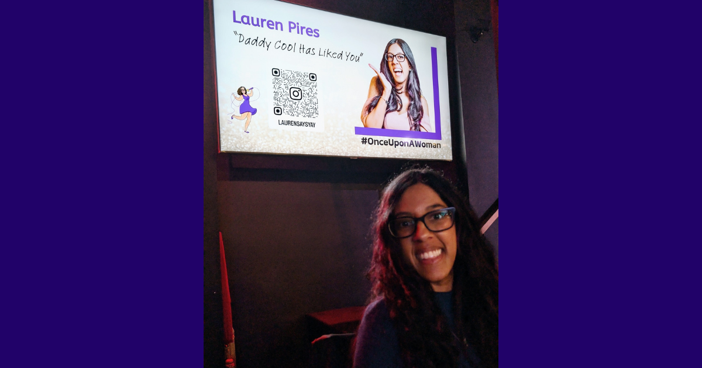
July 18, 2025
That Time I Accidentally Achieved a Bucket List Dream
I had a bucket list dream of getting laughs in a comedy club. Little Lauren never would have imagined achieving it by sharing a dating story where she had to own who she is.
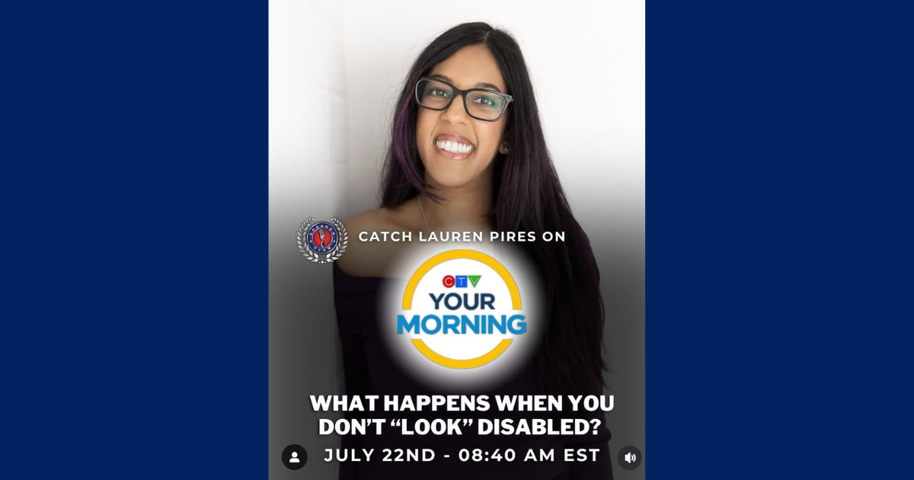
July 17, 2025
Catch Me on CTV Your Morning on Tues Jul 22!
Have you ever said "you don't look disabled"? Phrases like that can be well-intentioned, but they aren't actually the compliments some people think they are.
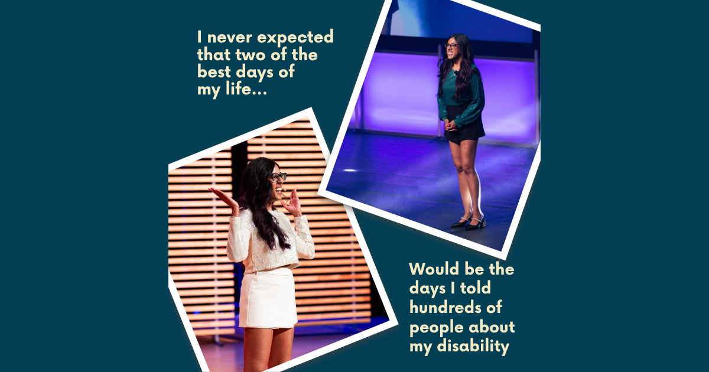
July 7, 2025
Two of the Best Days of My Life Aren't What I Ever Expected Them to Be
Two of the best days of my life involved telling HUNDREDS of people about the disability I was born with, and hid as much as I could for 30+ years.
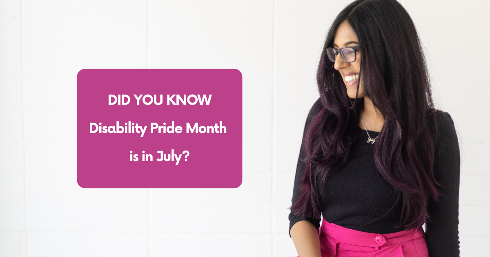
July 3, 2025
Did You Know July Is Disability Pride Month?
I only learned about Disability Pride Month two years ago, when I started speaking about my rare muscle disorder. Now I give keynotes and workshops from high school to corporate.
June 26, 2025
Building Inclusion Through Empathy — Canadian SME Small Business Magazine
Employees who disclosed their disabilities were over TWICE as likely to feel regularly happy at work. So happy to share my thoughts with CanadianSME Magazine.
June 3, 2025
My First Rick Hansen Foundation School Program Presentation — 900 Students Later!
My first virtual presentation as a Rick Hansen Foundation School Program Ambassador — 40 classes, over 900 grade 5-8 students, and a chat overflowing with questions!
June 1, 2025
The Yay Team Hit Our IDA Walk and Roll Step and Funding Goals!
The Yay Team exceeded our step goals AND funding goal! Across three years, we've officially raised over $5,000 USD for the Invisible Disabilities Association!
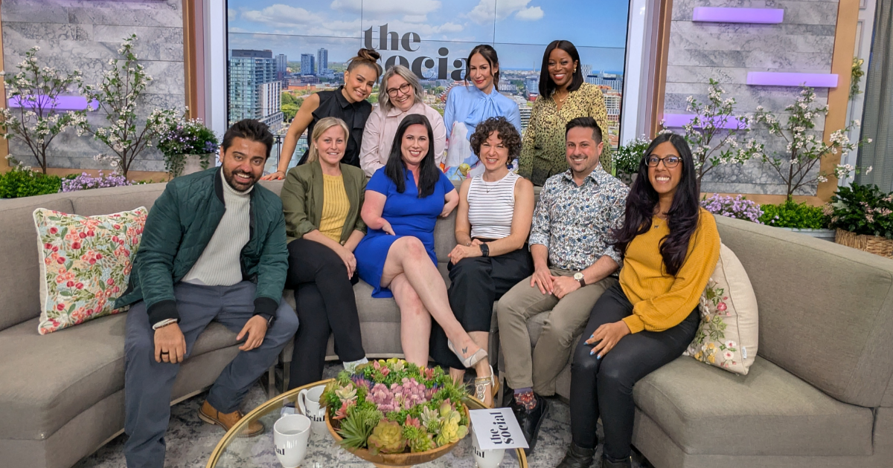
June 1, 2025
National AccessAbility Week Recap
What a week! From The Social studio audience to Speaker Slam to my first Rick Hansen Foundation School Program presentation for 900 students — a whirlwind.
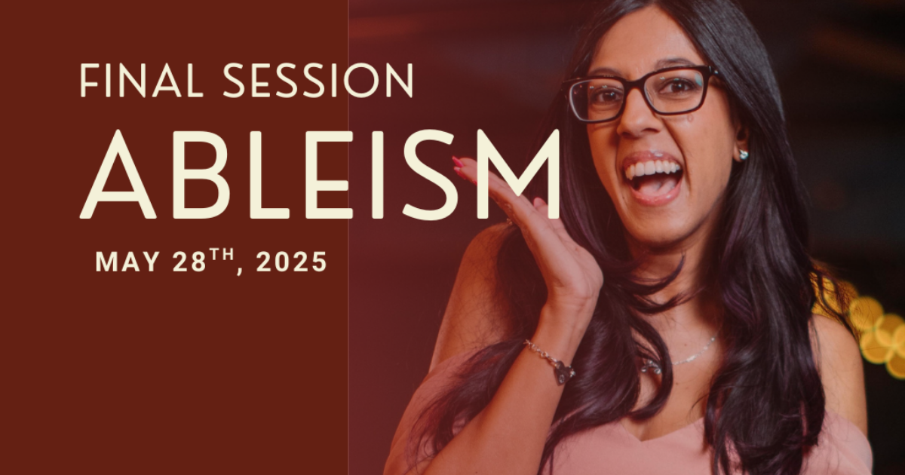
May 29, 2025
New Presentation for Schools and Youth: Everyday Ableism and How to Recognize It
Would I really have enough examples of ableism to make a whole presentation? Turns out the answer was yes — from family comments to internet strangers to internalized ableism.
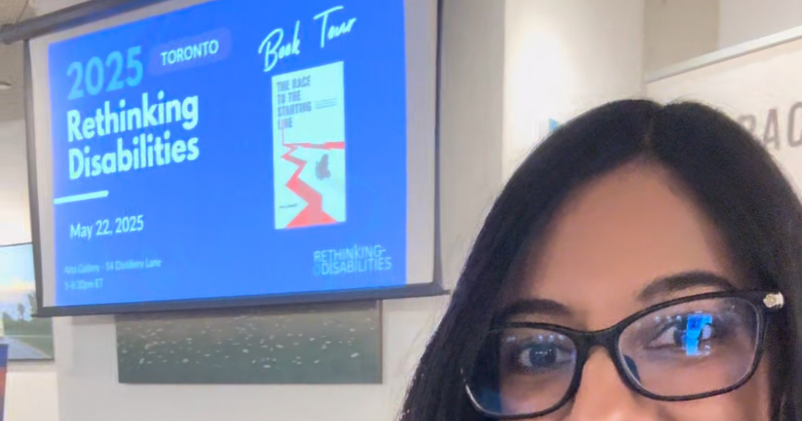
May 25, 2025
Rethinking Disabilities Toronto at Arta Gallery
Led a session on What We Don't See: Supporting Invisible Disabilities at Work for HR leaders and DEI practitioners. As one attendee said, it was a life-affirming night.
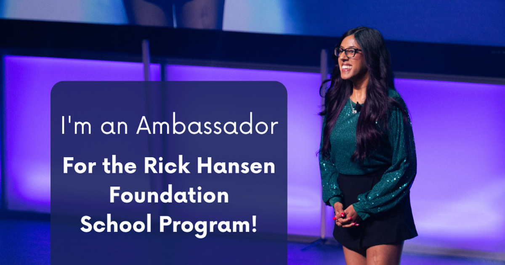
May 25, 2025
National AccessAbility Week and Becoming a Rick Hansen Foundation School Program Ambassador
I was selected as an Ambassador for the Rick Hansen Foundation School Program! Growing up with little disability representation, it feels amazing to be that for students now.
May 7, 2025
I'm Walking 57 km in May for Mobility Awareness Month!
Walking 85,000 steps in May is a lot when you have 33% physical strength. Luckily, I also have 100% spirit. ✨
Stay in the Loop
Follow Lauren's journey and get updates on new talks, media features, and blog posts.
Follow on Instagram